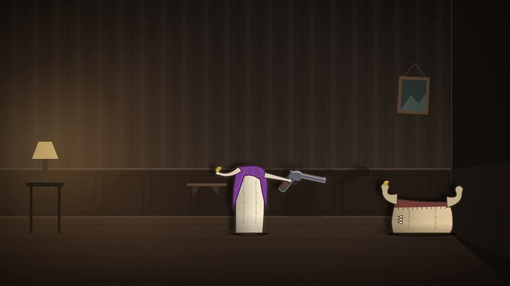
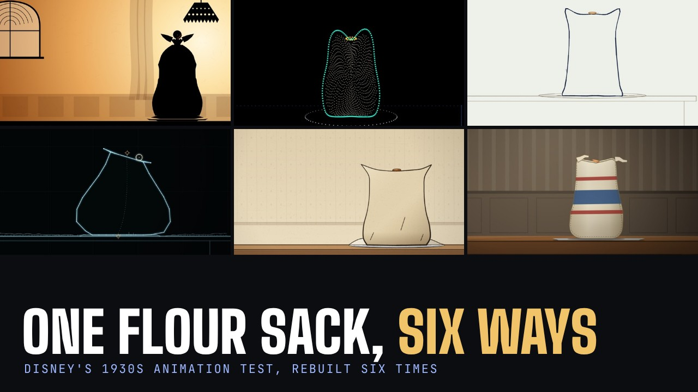
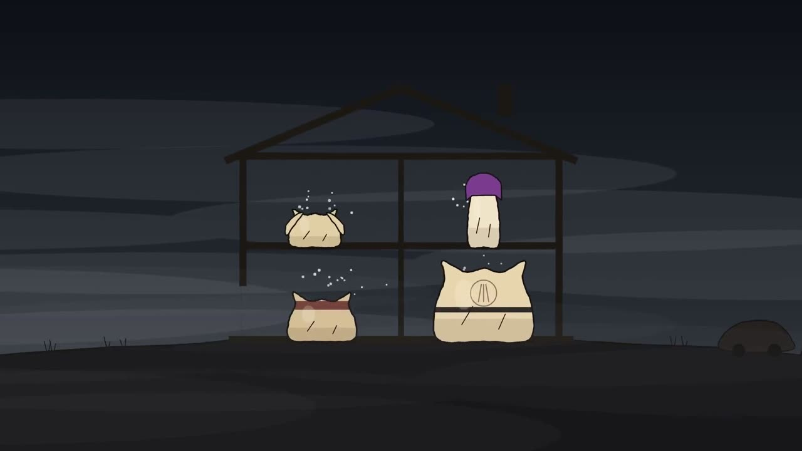
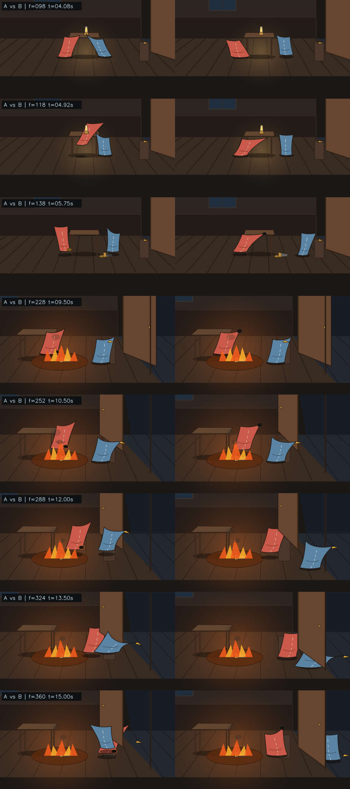

PAELEO · Flour-Sack Cinema
Every flour-sack case study, live generative bank, and actuarial sieve pulled into burning-house: from one sack across six SCION swarms (PAE-03), to two sacks in one lamp room (VTX-0.1), to four sacks across 8,916,100,448,256 stories in Calvino's burned house (PAE-04).

The Burning of the Abominable House
Four sacks, twelve deeds, three screenings, seven live reconstruction instruments, and 47 evidence sheets.

Flour Sacks
Unified screening room pairing PAE-03 The Flour Tower (1 sack, 6 SCION swarms) and PAE-04 The Abominable House (4 sacks, 12 deeds).

The Flour Tower
One sack, ten choices, six computational media (Reiniger, Whitney, Foldès, Sutherland, Pose2Pose, Soft-Body) and 18 critic rounds.

The Whole House
One question, five answers, 15-minute and 5-minute running orders, side-by-side rule counts, and register guide.

Lamp Room Workbench
Two flour sacks, 77 identical opening frames, one patched line of intent, and a blinded perceptual witness gate.

The Programmer's Room Trilogy
Waldemar's corkboard count (27), entering the forecast fire at 21:17 (28), and the room-light-witness DP ledger (29).